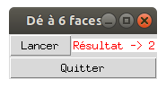
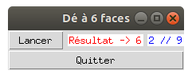

Texte variable
Nous allons élaborer dans ce classeur un programme simulant le lancer d'un dé à 6 faces :

Lancez le programme ci-dessous et contemplez le résultat.
import tkinter as tk
from random import randint
def nouveau_lance():
nb = randint(1, 6)
texte_de.set('Résultat -> ' + str(nb))
# Création de la fenêtre principale (main window)
mon_app = tk.Tk()
mon_app.title('Dé à 6 faces')
# Création d'un widget Button (bouton Lancer)
bouton_lancer = tk.Button(mon_app, text = 'Lancer', command = nouveau_lance)
# Positionnement du widget avec la méthode grid()
bouton_lancer.grid(row=0, column=0)
# Création d'un widget Button (bouton Quitter)
bouton_quitter = tk.Button(mon_app, text ='Quitter', command = mon_app.destroy)
bouton_quitter.grid(row=1, column=0, columnspan=2, sticky='ew')
# Objet texte variable pour actualiser le texte du label
texte_de = tk.StringVar()
# On appellle une fois la fonction pour initialiser notre texte_de
# cette sera ensuite appelée via le bouton "Lancer"
nouveau_lance()
# Création d'un widget Label dont le texte est variable
label_resultat = tk.Label(mon_app, textvariable = texte_de, fg = 'red', bg = 'white')
label_resultat.grid(row=0, column=1)
mon_app.mainloop()
Dans cet exemple, vous remarquerez plusieurs points intéressants :
- La fenêtre possède un vrai titre à présent et pas le titre standard Tk
- Nous avons ajouté un bouton Lancer. Lorsque celui-ci est pressé, la fonction Python
nouveau_lance()est appelée - Le texte du label est modifié. Cela nécessite une petite explication ...
Modification du texte d'un objet
Sous Tkinter, le texte d'un Label est déterminé au moment de sa création et il n'y a plus moyen de le modifier par la suite. Or dans cet exemple, nous voulons bien sur modifier le texte. Nous utilisons donc pour cela un nouvel objet de Tkinter : le StringVar(). La ligne
texte_de = tk.StringVar()
permet de créer un objet StringVar accessible par la variable texte_de.
Nous indiquons ensuite lors de la création du Label que son texte sera variable et que son contenu
sera accessible par la
variable texte_de :
label_resultat = tk.Label(mon_app, textvariable=texte_de, fg='red', bg='white')
La dernière chose qu'il nous reste à apprendre, c'est modifier le texte de cet objet StringVar.
Cela est réalisé par l'appel de la méthode set sur l'objet
texte_de :
texte_de.set('Résultat -> ' + str(nb))
Appel d'une fonction Python par un bouton
Dans cet exemple, l'appui sur le bouton Lancer appelle une fonction que nous avons élaboré nous-même. Il est en effet très simple avec Tkinter de relier l'appui sur un bouton avec l'appel d'une fonction :
bouton_lancer = tk.Button(mon_app, text ='Lancer', command=nouveau_lance)
Gestionnaire de positionnement
Le bouton Quitter est positionné à la deuxième ligne (row=1) et commence dans la 1ère colonne (column=0) pour
s'étendre sur 2 colonne (columnspan=2) ; la dernière option sticky='ew'
force le bouton à occuper tout l'espace des 2 colonnes en largeur ("d'est en ouest"):
bouton_quitter.grid(row=1, column=0, columnspan=2, sticky='ew')
A vous de jouer
Modifier cette application afin d'afficher le nombre de 6 qui ont été tirés et le nombre de coups au total. Vous pouvez vous inspirer de l'illustration suivante : 
import tkinter as tk
from random import randint
nb_6 = 0
nb_total = 0
def nouveau_lance():
global nb_6, nb_total
nb = randint(1, 6)
nb_total += 1
if nb == 6:
nb_6 += 1
texte_de.set('Résultat -> ' + str(nb))
texte_stats.set(f"{nb_6} // {nb_total}")
# Création de la fenêtre principale (main window)
mon_app = tk.Tk()
mon_app.title('Dé à 6 faces')
# Création d'un widget Button (bouton Lancer)
bouton_lancer = tk.Button(mon_app, text='Lancer', command=nouveau_lance)
# Positionnement du widget avec la méthode pack()
bouton_lancer.grid(column=0, row=0)
# Création d'un widget Button (bouton Quitter)
bouton_quitter = tk.Button(mon_app, text='Quitter', command=mon_app.destroy)
bouton_quitter.grid(column=0, columnspan=3, row=1, sticky='ew')
# Objet texte variable pour actualiser le texte du label
texte_de = tk.StringVar()
texte_stats = tk.StringVar()
# On appellle une fois la fonction pour initialiser notre texte_de
# cette sera ensuite appelée via le bouton "Lancer"
nouveau_lance()
# Création d'un widget Label dont le texte est variable
label_resultat = tk.Label(mon_app, textvariable = texte_de, fg='red', bg='white')
label_resultat.grid(column=1, row=0, padx=5)
label_stat = tk.Label(mon_app, textvariable=texte_stats, fg='blue', bg='white')
label_stat.grid(row=0, column=2)
mon_app.mainloop()